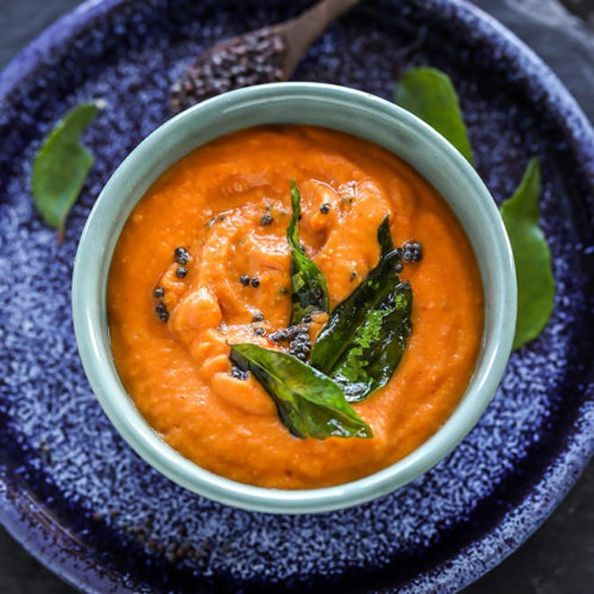

Tomato Chutney

Tomato Chutney is a staple dish in southern parts of India where it is usually served as a side dish along with a main dish such as Dosa,Chappatis, etc. It's a paste/mixture of tomato puree, and spices and tastes absolutely delicious when eaten fresh! It's also very easy to make and can be a quick dish to go along with your rotis, dosas etc. I eat them almost 3-4 times a week along with my dosas and never get tired of it! The spicyness and the paste like texture is a delight to eat and it's honestly one of my favourites.
Ingredients
- Fresh Tomatoes
- Onions
- Salt
- Curry Leaves
- Garlic
- Mustard
- Dried Red Chilli
- Groundnut Oil
- Asafoetida Powder (Perungayam in tamil)
Steps
- Cut 4-5 tomatoes and 3-4 onions into small pieces and is kept aside.
- Take a pan with about 3 tsps of oil and heat it up lightly.
- Add the cut onions and around 4-5 chillies into the pan and roast them to a golden color.
- Now add the cut tomatoes with the required quantity of salt (abt 1 tsps) and mix/roast along with the onions.
- After the tomatoes, onions and chillies mix well together, allow them to cool down for about 10 minutes.
- Add the quantities in an electric mixy and convert them to a nice paste.
- Now add about 2 tsps of oil in a pan and heat it lightly.
- Add 1/2 tsps of mustard seeds, about 10 curry leaves, a small pinch of Asafoetida powder and roast them until the mustard seeds break down.
- Now add the contents of the pan to the paste we got before and mix them well.
{kind=link}
{kind=link}